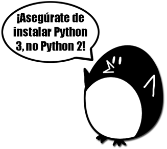
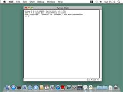
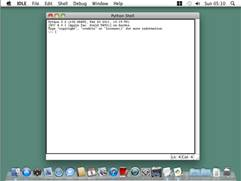

|
|
Capítulo 1 |
Instalando Python |

Temas Tratados En Este Capítulo:
· Descargar e instalar el intérprete de Python
· Cómo usar este libro
· La página web de este libro en http://inventwithpython.com/es
¡Hola! Este libro te enseñará a programar creando videojuegos. Una vez que aprendas cómo funcionan los juegos en este libro, serás capaz de crear tus propios juegos. Todo lo que necesitas es una computadora, un software llamado el intérprete de Python, y este libro. El intérprete de Python es libre para descargar de Internet.
Cuando era niño, un libro como este me enseñó cómo escribir mis primeros programas y juegos. Era divertido y fácil. Ahora, siendo un adulto, sigo divirtiéndome programando y me pagan por hacerlo. Pero incluso si no te conviertes en un programador cuando crezcas, programar es una habilidad divertida y útil para tener.
Las computadoras son máquinas increíbles, y aprender a programarlas no es tan difícil como la gente cree. Si puedes leer este libro, puedes programar una computadora. Un programa de computadora es un conjunto de instrucciones que la computadora puede entender, igual que un libro de cuentos es un conjunto de oraciones que el lector entiende. Ya que los videojuegos no son más que programas de computadora, también están compuestos por instrucciones.
Para dar instrucciones a una computadora, escribes un programa en un lenguaje que la computadora comprende. Este libro enseña un lenguaje de programación llamado Python. Hay muchos otros lenguajes de programación, incluyendo BASIC, Java, JavaScript, PHP y C++.
Cuando era niño, era común aprender BASIC como un primer lenguaje. Sin embargo, nuevos lenguajes de programación tales como Python han sido inventados desde entonces. ¡Python es aún más fácil de aprender que BASIC! Pero sigue siendo un lenguaje de programación muy útil utilizado por programadores profesionales. Muchos adultos usan Python en su trabajo y cuando programan por diversión.
Los juegos que crearás a partir de este libro parecen simples comparados con los juegos para Xbox, PlayStation, o Nintendo. Estos juegos no tienen gráficos sofisticados porque están pensados para enseñar conceptos básicos de programación. Son deliberadamente sencillos de modo que puedas enfocarte en aprender a programar. Los juegos no precisan ser complicados para ser divertidos.
Descargar e Instalar Python
Necesitarás instalar un software llamado el intérprete de Python. El programa intérprete entiende las instrucciones que escribirás en lenguaje Python. De ahora en adelante me referiré al "software intérprete de Python" simplemente como "Python".
¡Nota importante! Asegúrate de instalar Python 3, y no Python 2. Los programas en este libro usan Python 3, y obtendrás errores si intentas ejecutarlos con Python 2. Esto es tan importante que he agregado la caricatura de un pingüino en la Figura 1-1 para decirte que instales Python 3 así no te pierdes este mensaje.

Figura 1-1: Un pingüino extravagante te dice que instales Python 3.
Si usas Windows, descarga el instalador de Python (el archivo tendrá la extensión .msi) y haz doble clic sobre él. Sigue las instrucciones que el instalador muestra en pantalla:
1. Selecciona Instalar para Todos los Usuarios y haz clic en Next (Siguiente).
2. Elige C:\Python34 como carpeta de instalación haciendo clic en Next (Siguiente).
3. Haz clic en Next (Siguiente) para omitir la sección de configuración de Python.
Si usas Mac OS X, descarga el archivo .dmg indicado para tu versión de OS X del sitio web y haz doble clic sobre él. Sigue las instrucciones que el instalador muestra en pantalla:
1. Cuando el paquete DMG se abra en una nueva ventana, haz doble clic sobre el archivo Python.mpkg. Es posible que necesites ingresar la clave de administrador.
2. Haz clic en Continue (Continuar) para pasar la sección Bienvenido y en Agree (Aceptar) para aceptar la licencia.
3. Selecciona HD Macintosh (o como sea que se llame tu disco rígido) y haz clic en Install (Instalar).
Si usas Ubuntu, puedes instalar Python del Centro de Software de Ubuntu siguiendo estos pasos:
1. Abre el Centro de Software de Ubuntu.
2. Escribe Python en el cuadro de búsqueda en la esquina superior derecha de la ventana.
3. Elige IDLE (using Python 3.4), o la que sea la última versión en este momento.
4. Haz clic en Install (Instalar). Tal vez necesites la clave de administrador para completar la instalación.
Iniciando IDLE
La sigla IDLE (Interactive DeveLopment Environment en inglés) significa Entorno Interactivo de Desarrollo. El entorno de desarrollo es como un software procesador de palabras para escribir programas de Python. Iniciar IDLE es diferente para cada sistema operativo.
Sobre Windows, haz clic en el botón Inicio en la esquina inferior izquierda, teclea “IDLE” y selecciona IDLE (Python GUI).
Sobre Mac OS X, abre la ventana de Finder y haz clic en Applications. Luego haz clic en Python 3.4. Luego clic sobre el ícono de IDLE.
Sobre Ubuntu o Linux, abre una terminal y teclea “idle3”. También puede ser posible hacer clic en Applications en el borde superior de la pantalla. Luego haz clic sobre Programming y después IDLE 3.
La ventana que aparece la primera vez que ejecutas IDLE es la consola interactiva, como se muestra en la Figura 1-2. Puedes ingresar instrucciones de Python en la consola interactiva a a la derecha del prompt >>> y Python las ejecutará. Luego de mostrar los resultados de la instrucción, un nuevo prompt >>> estará esperando por tu próxima instrucción.
 
 
Figure 1-2: La consola interactiva del programa IDLE en Windows, OS X, y Ubuntu Linux.
Cómo Usar este Libro
La mayoría de los capítulos en este libro comenzará con una muestra de ejecución del programa presentado en el capítulo en cuestión. Esta demostración revela cómo se ve el programa cuando lo ejecutas. El texto introducido por el usuario se muestra en negrita.
Teclea tú mismo el código del programa en el editor de archivos de IDLE, en lugar de descargarlo o copiarlo y pegarlo. Recordarás mejor cómo programar si te tomas el tiempo para escribir tú mismo el código.
Números de Línea y Espacios
Al teclear el código de este libro, no escribas los números de línea que aparecen al principio de cada línea. Por ejemplo, si ves esto en el libro:
9. número = random.randint(1, 20)
o necesitas teclear el “9.” a la izquierda, o el espacio a continuación. Sólo tecléalo así:
número = random.randint(1, 20)
Esos números están ahí sólo para que este libro pueda referir a líneas específicas del programa. No son parte del código fuente de un programa real.
Aparte de los números de línea, escribe el código exactamente como aparece. Ten en cuenta que algunas de las líneas de código están indentadas por cuatro u ocho espacios. Cada caracter en IDLE ocupa el mismo ancho, de modo que puedes contar el número de espacios contando el número de caracteres en las líneas arriba o abajo.
Por ejemplo, los espacios indentados aquí están marcados con un ▪ cuadrado negro para que puedas verlos:
while intentos < 10:
▪▪▪▪if número == 42:
▪▪▪▪▪▪▪▪print('Hola')
Ajuste de Texto en Este Libro
Algunas instrucciones son demasiado largas para caber en una línea de la página por lo que continuarán en la línea siguiente. Al tipear este código, escríbelo todo en una línea sin pulsar intro. Puedes darte cuenta cuándo comienza una nueva instrucción mirando los números de línea a la izquierda del código. El ejemplo mostrado a continuación contiene sólo dos líneas:
1. print(¡Esta es la primera instrucción! xxxxxxxxxxxxxxxxxxxxxxxxxxxxxxxxxxxxx
xxxxxxxxxxxx')
2. print('Esta es la segunda instrucción, no la tercera.')
La primera instrucción continúa en el siguiente renglón y da el aspecto de que hubiera tres instrucciones en total. Esto es sólo porque las páginas de este libro no son lo suficientemente anchas para contener la primera instrucción en una sola línea de texto.
Buscando Ayuda Online
El sitio web de este libro es http://inventwithpython.com/es. Puedes encontrar varios recursos relacionados con este libro allí. Varios enlaces de este libro utilizan el dominio invpy.com para direcciones URL acortadas.
El sitio web en http://reddit.com/r/inventwithpython es un lugar estupendo para para hacer preguntas de programación relacionadas con este libro. Publica preguntas generales sobre Python en los sitios web LearnProgramming y LearnPython en http://reddit.com/r/learnprogramming y http://reddit.com/r/learnpython respectivamente. http://translate.google.com puede realizar la traducción de Inglés para usted.
Asimismo, envíame por correo electrónico tus preguntas de programación a al@inventwithpython.com.
Ten presente que hay formas inteligentes para hacer preguntas de programación que ayudan otros a ayudarte. Asegúrate de leer las secciones de Preguntas Frecuentes que estos sitios web tienen acerca de la forma correcta de publicar preguntas. Cuando hagas preguntas de programación, haz lo siguiente:
· Si estás escribiendo a mano los programas de este libro y obtienes un error, primero busca errores tipográficos con la herramienta diff en http://invpy.com/es/diff. Copia y pega tu código en la herramienta diff para encontrar las diferencias entre el código del libro y tu programa.
· Explica lo que estás intentando hacer cuando expliques el error. Esto permitirá a quien te ayuda saber si estás equivocándote por completo.
· Copia y pega el mensaje de error completo y tu código.
· Busca en la web para ver si alguien ya ha formulado (y respondido) tu pregunta.
· Explica lo que ya has intentado hacer para resolver tu problema. Esto muestra a la gente que ya has hecho algo de trabajo para tratar de entender las cosas por tí mismo.
· Sé amable. No exijas ayuda o presiones a quienes te ayudan para que respondan rápido.
Preguntar a alguien, “¿Por qué no está funcionando mi programa?” no le brinda ninguna información. Comunica a la persona qué es lo que estás intentando hacer, exactamente qué mensaje de error obtienes y qué versión de sistema operativo estás usando.
Resumen
Este capítulo te ha ayudado a comenzar con el software Python mostrándote el sitio web http://python.org, de donde puedes descargarlo gratis. Luego de instalar y lanzar el software Python IDLE, estarás listo para aprender a programar a comenzando en el próximo capítulo.
El sitio web de este libro en http://inventwithpython.com/es contiene más información sobre cada uno de los capítulos, incluyendo un sitio web de trazado en línea y una herramienta diff que puede ayudarte a entender los programas de este libro.